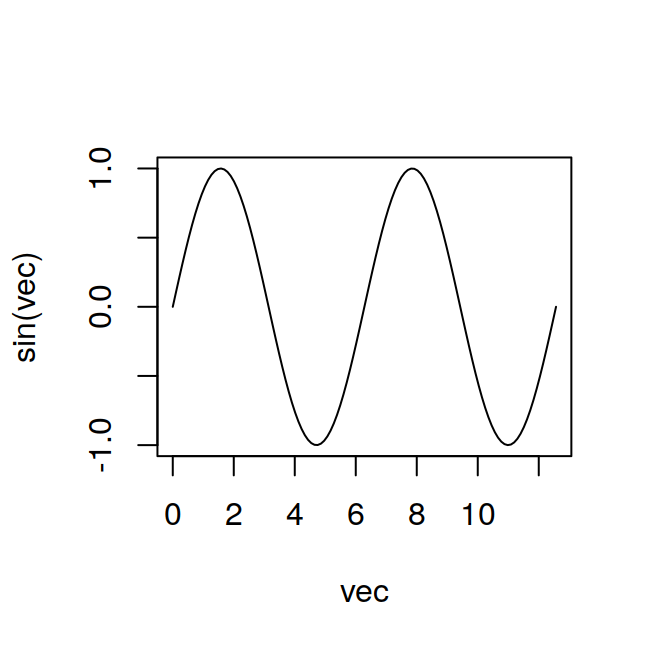

8 Graphics
There are four main graphics libraries that can be used in R. The first is the base graphics system that comes builtin with every R installation and will be described in this chapter. The other three main graphics libraries (ggplot2, lattice, and plotly), can be installed as additional packages. Each of these libraries provide a complete, independent system to generate graphics in R. Choosing one library over the other is mostly a matter of personal preference because pretty much any graphic that can be built with one library can also be built with the others. Some graphics are easier to build with one library than another and vice-versa. In recent years ggplot2 has gained lots of popularity and lattice is less popular than it was some years ago. Despite the increasing popularity of ggplot2 the base R graphics that are described in this chapter are still widely used. plotly is a recent entry and is somehow a special case because it is primarily designed to generate interactive graphics that can be displayed on html pages, while the other graphics libraries have very limited interactive functionality and are primarily designed to generate static high-quality graphics. plotly is special also because through the ggplotly function it can convert a ggplot2 graph into an interactive plotly graphic.
Because the base R graphics library is still widely used and (in my opinion) is somewhat simpler to use for beginners, I would recommend learning it first. The ggplot2 library is described in chapter 9, the lattice graphics library is described in chapter 11, and the plotly library is described in chapter 10.
8.1 Overview of R base graphics functions
| Function |
|---|
plot |
barplot |
boxplot |
histogram |
matplot |
stripchart |
interaction.plot |
8.2 The plot Function
The plot function is most commonly used to draw a scatterplot of two variables, however if given a R object with a plot method as an argument it will produce different types of graphics depending on the object it is plotting. Let’s see an example of a scatterplot with some simulated data:
a = rnorm(5, 1.6, n=50)
b = rnorm(15, 4.3, n=50)this creates two vectors of length 50 with values normally distributed, now we can plot the values of vector b, against the values of vector b with:
plot(x=a, y=b) ## or for short plot(a, b)Figure 8.1: A scatterplot.
the resulting scatterplot appears in Figure 8.1.
If we were to plot the change of a variable over time it could be a good idea to connect the values at different time points in the plot with lines, this is easily achieved setting the option type. Below is an example, the result is shown in Figure 8.2.
ti=1:50
b=rnorm(15,4.3,n=50)
plot(ti, b, type='l')Figure 8.2: Values connected by lines.
Some other possible values for the option type are p for points (the default), b for both points and lines, and o for overplotted points and lines (very similar to b).
8.3 Drawing Functions
The plot function can be used for drawing mathematical functions, for example:
vec = seq(from=0, to=4*pi, length=120)
plot(vec,sin(vec), type="l")
in this case is necessary to use l as the type of plot, otherwise the plot would resemble a messy scatterplot. It is also possible to plot markers on the points in which the function is actually evaluated. Using the option b for the plot type, both a continuous line and markers are plotted. There are lots of options to define the appearance of a plot, next comes an overloaded example used just to introduce some of these options. A more detailed description is given in Section 8.9.
8.3.1 The matplot function
Plotting the sine and cosine functions together with the matplot function, the result is in Figure 8.3
a= seq(from=0, to= 2*pi, length=20)
s = sin(a)
c = cos(a)
aa = cbind(a,a) #matrix of hor coord
cs = cbind(c,s) #matrix of vert coord
matplot(x=aa, y=cs, type="l", lwd=1.8, ylab="sine and cosine functions")
Figure 8.3: Sine and cosine functions with matplot.
8.4 Barplots
Barplots sometimes come in handy when you want to summarise your data. Suppose we have administered a test to three different groups of people, which we will designate as a, b and c. We want to summarise and compare the performance of each group with a nice graph, a barplot will make it. The data are stored in the file test.txt, in the format shown in Table 8.1.
| a | b | c |
|---|---|---|
| 4 | 6 | 5 |
| 5 | 8 | 3 |
| 3 | 7 | 8 |
| 6 | 5 | 4 |
| 5 | 9 | 9 |
| 7 | 7 | 8 |
| 5 | 6 | 5 |
| 8 | 5 | 7 |
| 5 | 8 | 6 |
| 4 | 10 | 4 |
We can read in the file directly as a dataframe:
test = read.table("datasets/test.txt", header=TRUE)We want to use the tapply function to get quickly summary tables with the means and standard deviations for the three groups. However the format of the data frame at this point is not suitable for the tapply function, because it has 3 observations for each row, and the tapply function can be used only with the format “one row per observation”, in which we have the values of the observations in one column and a set of “labels” identifying the group to which a given observation belongs to in another column. Fortunately, we can easily change the format of our dataframe with the stack command. What it does is just to create a single “values” vector from the three columns we had previously, and to add automatically another “index” vector with the labels we need:
test2 = stack(test)we can have a look at the first elements of the new dataframe typing:
head(test2, n=10)## values ind
## 1 4 a
## 2 5 a
## 3 3 a
## 4 6 a
## 5 5 a
## 6 7 a
## 7 5 a
## 8 8 a
## 9 5 a
## 10 4 aplease notice that the stack function has automatically named the two vectors values and ind, we need to know these names to use the tapply function.
Now we’ll create the two summary tables using the tapply function, one with the means and one with the standard deviations for the three groups:
test_means = tapply(X=test2$values, IND=test2$ind, FUN=mean)
test_sd = tapply(X=test2$values, IND=test2$ind, FUN=sd)Now we can draw a simple barplot displaying the means for each group:
barplot(test_means, col=c("darkred","salmon2","plum4"))Figure 8.4: Simple barplot.
we’ve added colours to the graph using the col option. You can look at the resulting graph in Figure 8.4.
You can control the width of the bars specifying the width option, and setting the range for the x axis with the xlim option, specifying only the width does nothing, you must also set the xlim. You set xlim with a vector of the form xlim = c(from, to), in which from is the origin and to is the end of the axis. In the example below we will set xlim to go from 0 to 3 and the bars to have a width of 0.5:
barplot(test_means,col=c("darkred","salmon2","plum4"),
xlim = C(0,3), width=0.5)this sets the width of all bars at 0.5, we could specify the width for each single bar instead, by giving to width a vector with the width values for each bar.
You can also control the spacing between the bars with the space option. The default is set to 0.2.
8.4.1 Barplots with Error Bars
Now let’s say we want to get the same barplot but with error bars showing the standard deviation for each group. We could achieve this result adding lines to the current graph, but there is a better option, we can use the barplot2 command, which comes with the gplots library and provides an easy way of adding error bars to a barplot. So once we have the `gplots} package installed we first load it:
library(gplots)and then we can draw our barplot with error bars. To get them, we need to set the option plot.ci=TRUE and then specify the upper and lower bounds of the error bars with the ci.u and ci.l commands. So we first create the values for ci.u and ci.l, so that the error bars represent one standard deviation around the mean. We’ll use the values from the two tables we had created before, with means and standard deviations for the three groups:
upper = test_means + (test_sd)
lower = test_means - (test_sd)Now we can draw our barplot, you can see the result in Figure 8.5:
barplot2(test_means,col=c("darkred","salmon2","plum4"),
plot.ci=TRUE,ci.u=upper,ci.l=lower)Figure 8.5: Barplot with error bars.
8.5 Boxplots
Boxplots can be used to visualise the central tendency and the dispersion of the data for a given sample, and to directly compare these same characteristics for different samples. Let’s look at one of them, the data are organised in a dataframe in the file boxplot1.txt. They are the scores for two different groups (group a and group b) in a test. With the boxplot we want to see how the scores are distributed in the two groups. The dataframe contains a column score, with the score for each subject and another column group that defines the group a given observation comes from. So we first read in the dataframe, and then ask for the boxplots with the distribution of scores, as a function of the group they belong to.
dats = read.table("datasets/boxplot1.txt", header=TRUE)
boxplot(dats$score~dats$group, names=c("group a", "group b"))
Figure 8.6: Boxplots comparing the distribution for two groups.
The results are in Figure 8.6, the thick black lines in the middle of the boxes represent the median, if this is about the middle of the box, the distribution of the data should be normal. The two lines that delimit the box are called “hinges”, and they are approximately the first and the third quartiles. The horizontal lines that form the `Ts’ above and below the box are called ``whiskers’’, and inside them are contained all the observations that fall within a distance of 1.5 times the size of the box, upwards or downwards. Points that fall outside this distance are outliers and they are represented as a circle. In our case there are two outliers in group a. Apart from checking if the distribution is normal, you can also check if the variances are approximately equal, by comparing the size of the boxes (the distance between the hinges). If one boxplot is clearly bigger than the other one (for example two times bigger), then the variances for the two groups are likely not to be equal.
8.6 Histograms
Histograms can be used to visualise the distribution of a sample, the function hist, can be used to plots a histogram of frequencies (counts) of the sample, or of its density function (setting the option freq=F). Let’s first create a sample with a normal distribution, and then plot its histogram, the result is in Figure 8.7.
my_distr = rnorm(100, 5, 1.7)
hist(my_distr)Figure 8.7: Frequency distribution of a random sample.
8.7 Stripcharts
If the groups contain a small number of observations, it might be better to use a stripchart to visualise their distributions. In a stripchart each point represents a single observation. By default they are drawn on a line, so if two observations have the same score, they overlap. To avoid this problem you can give a certain amount of jitter to the plot, so that observations with the same score are scattered a little and can be easily distinguished. Here’s the code for producing a stripchart, the data are in the file stripchart1.txt and they are arranged in the same way as the data in boxplot1.txt, just the sample sizes are smaller, with 6 observations per group.
stripchart(dats$score~dats$group, method="jitter",
jitter=0.1, pch=1, vertical=TRUE)Figure 8.8: Stripchart example.
8.8 Interaction Plots
Interaction plots can be used to visualise the means for the levels of a factor, at the levels of another factor, for example in a two-way ANOVA design, and in this way they allow to spot possible interactions between the two factors involved. The following graph comes from a two-way ANOVA design, in which the variable of interest was the proportion of errors in a task, as a function of the spatial congruency and stimulus onset asincrony (SOA), of a distracting stimulus presented during the execution of the task.
dats = read.table('datasets/direrr_all.txt', header=T)
levels(dats$congr)[1] = 'c - congruent'
levels(dats$congr)[2] = 'a - inc. goal-directed'
levels(dats$congr)[3] = 'b - inc. no-goal-directed'
interaction.plot(dats$SOA,dats$congr,dats$errors,
ylab="Proportion of errors", xlab="SOA",
trace.label="Congruency",
lty=c("solid", "dashed", "dotdash"))Figure 8.9: Interaction plot with different line types.
well the essential ingredients to get the plot are just the first three arguments (the others are optional), the default order in which you have to give them is a bit awkward, because the variable of interest (in our case dats$errors) is the third argument, the first one is the factor that goes on the x axis, and the second one is the trace factor, whose levels will be represented as lines of a different type, or of different colours. The y axis yields the measure for our variable of interest. You can see the plot in Figure 8.9. Another good way to represent the levels for the trace factor, is through the use of symbols, in the following graph (see the result in Figure 8.10) both line type lty and symbols pch are used to differentiate between the levels of the trace factor, in order to get this you need to set the option type to b that means use both line type and points (symbols), setting this option to l will give just different line types while setting it to p, will give just different symbols. In these examples I specified the line types and the symbols to use, but this is not necessary, if you don’t, R will cycle through its different line types and/or symbols as necessary to represent all the levels of the trace factor. See Section 8.9.1 for a description of the different line types and Section 8.9.2 for a description of the different symbols available in R.
interaction.plot(dats$SOA,dats$congr,dats$errors,
ylab="Proportion of errors", xlab="SOA",
trace.label="Congruency",
lty=c("solid", "dashed", "dotdash"),
type="b",pch=c(0,15,17))Figure 8.10: Interaction plot with different line types and different symbols.
8.9 Setting Graphics Parameters
Graphics parameters allow you to tweak many elements of a plot, such as the font for the labels, the symbols or line types to use and so on, see ?par to get a full list and description of these parameters. Graphics parameters can be set and accessed with the function par, called without arguments, as par, it will give you a full list of the current defaults, if you want to query only one or a few parameters use:
par("lwd") ## see current line width## [1] 1par(c("lwd","pch")) ## see lwd and plotting symbols## $lwd
## [1] 1
##
## $pch
## [1] 1to change the value of a parameter you can use:
par(lwd=1.4) ## change line width
par(pch="*", ## change plotting symbol
bg ="gray80") ## use a light gray backgroundMoreover most plotting functions like plot, barplot and so on, allow you to set some of the parameters for the current plot, as an argument to the function itself, for example in plot you can choose the type of plot (points vs lines) and the plotting symbol as options with type and pch:
d = rnorm(15,4,2)
e = rnorm(15,9,3)
plot(d~e, type="p", pch=3)The following sections will give a more in depth explanation of some graphics parameters, before that however we’ll have a closer look at how to use par.
8.9.0.1 Saving and Restoring Graphics Parameters
Often you’ll want to change the graphics parameters only for a few plots, and then reset them back to the defaults. The function par when used to change the value of some graphics parameters returns a list with the old values of the graphics parameters that have changed:
par("lwd", "col") #these are the default parameters## $lwd
## [1] 1
##
## $col
## [1] "black"oldpar = par(lwd=2, col="red") #while changing the parameters
#we store the old values in a list
oldpar## $lwd
## [1] 1
##
## $col
## [1] "black"s <- seq(0, 10, .1)
plot(s, sin(s)) #we plot somethingpar(oldpar) # and then we restore the old parametersnotice that calling par, opens a graphics device if there is not one already open, the changes you do using par apply only to this graphics device, any other new graphic device that you open will have the default graphics parameters.
8.9.0.2 List of Graphics Parameters by Category
| Parameter | Function |
|---|---|
col |
plotting colour |
col.axis |
colour for axis annotation |
col.lab |
colour for x and y labels |
col.main |
colour for main title |
col.sub |
colour for sub-titles |
bg |
background colour |
fg |
foreground colour |
| Parameter | Function |
|---|---|
family |
font family (e.g. “sans”, “serif”, “mono”) |
font |
font type for text (1=plain, 2=bold, 3=italic etc…) |
font.axis |
font type for axis annotation (1=plain, 2=bold, 3=italic etc…) |
font.lab |
font type for x and y labels (1=plain, 2=bold, 3=italic etc…) |
font.main |
font type for main titles (1=plain, 2=bold, 3=italic etc…) |
font.sub |
font type for sub titles (1=plain, 2=bold, 3=italic etc…) |
ps |
point size of text |
8.9.1 Line type with the lty parameter
There are six line types that you can call in R just with names or numbers (actually there are seven, the first one is “blank” or 0 which just draws nothing). These are listed in Table 8.4 and shown in Figure 8.11. There is a different, more complicated way for setting many more line types, please, consult the manual for further information on that.
| No. | Name |
|---|---|
| 1 | solid |
| 2 | dashed |
| 3 | dotted |
| 4 | dotdash |
| 5 | longdash |
| 6 | twodash |
Figure 8.11: The six default line types in R
8.9.2 Symbols with the pch parameter
pch is a graphical parameter for changing the way points are plotted in certain graphical functions. This parameter can be set in two ways, the first one is to give a symbol to be plotted as a character, for example
pch="+"
pch="T"
pch="*"
pch="3" in this case you enclose the character you want to use between quotes, you can’t use more than a single character. The other way to set the pch is to use a number between 0 and 25, which will select one of 26 special symbols available for plotting (see Figure 8.12), like circles, triangles, and so on:
pch=1
pch=3
pch=5Figure 8.12: Plotting symbols from 0 to 25
8.9.3 Fonts
The interface for setting font parameters for plots in R is somehow complex and I have a limited knowledge of how it works. I nonetheless hope that the notes below can be of some use to other people.
One of the reasons why setting font parameters can be confusing is that font parameters can be affected by several graphics parameters. For example the graphics parameter ps sets the point size of the font, but this size can be scaled by the cex parameter. Also font parameters can be set not only using the par interface, but directly when opening a graphics device, and these two ways of setting font parameters can have subtle differences. For example, the font point size can be set by using the pointsize argument when opening a pdf device:
this changes the size of both the font and the plotting symbols. The graphics parameter ps, however, changes only the size of the font:
the documentation for the graphics parameter ps also says that “unlike the pointsize argument of most devices, this does not change the relationship between mar and mai (nor oma and omi).”. I’m not sure what this means, but just be aware setting ps with a call to par or setting pointsize when opening a graphics device are not equivalent. Also, note that if you set the font size when you open a graphics device, the setting may be overridden by subsequent calls to par:
cex also overrides the graphics device settings:
The par setting family can be used to choose a serif, sans serif, or mono font:
Figure 8.13: Changing font family
however, specifying the exact font used is more complicated. One way to do this is by using the extrafont package https://cran.r-project.org/web/packages/extrafont/README.html
library(ggplot2)
n=100
dat=data.frame(x=rnorm(n), y=rnorm(n))
p = ggplot(dat, aes(x=x, y=y)) + geom_point()
p = p + xlab("X-Label") + ylab("Y-Label")
p = p + theme(text=element_text(size=12, family="Ubuntu"))
## NOT RUN
##ggsave("cairo_pdf_graphic.pdf", p, width=3.4, height=3.4, device=cairo_pdf)System fonts in pdf files can be used with the cairo_pdf device; this has the additional advantage of directly embedding the fonts in the pdf. For R base graphics you can invoke cairo_pdf() instead of pdf(). For ggplot2, when you invoke the ggsave function you can pass the argument device=cairo_pdf to use the cairo_pdf device.
Changing the font style is easy using the font parameter, a value of 1 corresponds to a normal (or plain) style, 2 to bold, 3 to italics, 4 to bold italics, and 5 will map the font to a symbol:
Figure 8.14: Changing font style
but note that setting font only changes the font style of plotted text. If you want to change the font style of other textual elements such as the axis labels or the plot title you have to set other graphics parameters:
Figure 8.15: Changing font style for other textual elements
8.10 Adding Elements to a Plot
8.10.1 Adding a Legend
Some graphics functions by default add a legend to the graph (e.g. interaction.plot), or allow to add (or remove) a legend by setting an option inside the function (e.g. barplot). However the default settings for the legend, such as positioning, text or symbols, might not be suitable to your graph, in which case you need to turn off the default legend (if there is one), and add a customised legend with the legend function. Below there is an example of an interaction plot with the legend added through the legend function, the resulting graph is in Figure 8.16
dats = read.table('datasets/direrr_all.txt', header=T)
levels(dats$congr)[1] = 'c - congruent'
levels(dats$congr)[2] = 'a - inc. goal-directed'
levels(dats$congr)[3] = 'b - inc. no-goal-directed'
interaction.plot(dats$SOA,dats$congr,dats$errors,
ylab='Mean proportion of directional errors', xlab='SOA',
type='b',pch=c(0,15,17),legend=FALSE) ## eliminate default legend
legend('topright',legend=c('a - congruent','b - inc. goal-directed',
'c - inc. no-goal-directed'),lty=c(3,2,1), pch=c(0,15,17),
bty='n', title='Congruency')Figure 8.16: Plot with “manually” added legend
here we first generated the plot, and afterwards we added the legend. The first argument, topright indicates the position where we want the legend to appear, other possible values are bottomright, bottomleft, right, bottom, center and so on. It is also possible to specify the position of the legend by giving the coordinates of its top-left corner, for the above example we might have written:
legend(x=2.3, y=0.2, legend=c('a - congruent','b - inc. goal-directed',
....example not continuedThe text of the legend is given as a character vector, each element of the vector represents one item of the legend.
Since we’re using both different line types, and different symbols to differentiate the lines in the interaction plot, for the legend we need to specify both in the legend, with the lty, and pch arguments, the line types and symbols of course, should be the same as those used for the plot.
In the above example we suppressed the drawing of a box around the legend setting the bty argument to n, if you want a box set it to o (this is the default anyway, so you don’t really need to specify it if you want the box). If you choose to enclose the legend into a box, you can set its background colour through the bg argument.
There are of course many other options, to get a full listing, please look up the manual.
8.10.2 Adding Text
You can insert text in a graph with the text function, you have just to specify the x and y coordinates of the point on which to center the text:
plot(x, y)
text(x=3,y=1.5, "mean for control group")if you want to use LaTeX mathematical symbols, you have to use the expression function:
text(x=3, y=1.5, expression(alpha))dpText = expression(italic("d'"))
uVtext = expression(paste('Amplitude (', mu, 'V)'))
deltaEText = expression(paste('Change', Delta, 'E'))
reLevText = expression(paste('Level ', italic('re.'), ' 1 ', mu, V^{2}, ' (dB)'))8.10.3 Adding a Grid
A grid can be easily added to an existing plot with the function grid
s <- seq(from=0, to=2*pi, length=100)
plot(s, sin(s))
plot(s, sin(s), type='l')
grid() ##add the gridThe default colour for the grid is lightgray, you can choose another colour setting the col option:
grid(col="red")8.10.4 Setting the Axes
If you don’t like the way the axes are set for a given plot, you can draw the plot without them first, and then add customised axes with the `axis+ function. There are several ways to get rid of the default axes on a plot:
plot(1:10, axes=FALSE) #do not draw any axes or box around
# the plot
plot(1:10, xaxt="n") #don't draw the x axis alone
plot(1:10, yaxt="n") #don't draw the y axis aloneOnce you’ve removed of one or more axis you can draw them calling the axis function:
axis(1, at=seq(1, 10, 3), labels=as.character(seq(1, 10, 3)))the first argument specifies the side on which the axis should be drawn, 1 means the bottom axis, 2 the left axis, 3 the top axis, and 4 the right axis. See ?axis for other arguments to the function.
8.11 Creating Layouts for Multiple Graphs {glayout}
8.11.1 mfrow and mfcol {mfrowmfcol}
The parameters mfrow and mfcol allow you to divide the graphics device you’re using (e.g. X11 or pdf) into multiple boxes, each box will contain a new figure. These parameters are set giving a vector of the form:
par(mfrow=c(n_rows,n_columns))where n_rows is the number of rows and n_columns is the number of columns you want for your layout. For example, the following will create a layout with 2 rows and 3 columns as you can see in Figure 8.17:
par(mfrow=c(2,3))
symb <- as.character(1:6)
for(i in 1:6){
plot(1, 1, pch=symb[i], xlab='', ylab='')
}
Figure 8.17: A 2x3 Layout with mfrow
mfcol works exactly the same way as mfrow, but the figures are drawn in sequence by column rather than by row, for example the following code yields the Figure 8.18
par(mfcol=c(2,3))
symb<-as.character(1:6)
for(i in 1:6){
plot(1,1,pch=symb[i],xlab='',ylab='')
}
Figure 8.18: A 2x3 Layout with mfcol
of course you can get other layouts, try:
par(mfrow=c(2,2)) ## 4 boxes
par(mfrow=c(1,3)) ## one row, 3 colsRather than having the figures drawn sequentially, following the order determined by mfrow or mfcol, it is possible to specify directly the position for the next figure using the mfg parameter. The next example will draw the plot in the slot defined by the crossing between the second row and the first column of a 2x2 layout:
par(mfrow=c(2,2)) ##create 2x2 layout
par(mfg=c(2,1)) ##set next fig at 2dn row, 1st col
plot(1:100, sin(1:100))8.11.2 layout
A more flexible way to divide a graphics device into multiple plotting regions is given by the layout function. With the layout function, the graphics device is divided into a matrix of n_rows x n_cols sub-regions, and each figure is assigned to one or more of these sub-regions. Let’s look at an example:
m <- matrix(c(1,2,3,4), nrow=2, byrow=TRUE)
m## [,1] [,2]
## [1,] 1 2
## [2,] 3 4layout(m)the matrix m we’ve created, completely defines our layout for the graphics window. The window is divided into 2 x 2=4 sub-regions. Moreover, the first figure is assigned the sub-region on the top-left of the window, the second figure the sub-region at the top-right, the third the region at the bottom-left, and the fourth the region at the bottom-right. This example is in itself not very different from what we would get with mfrow, however two key differences make layout more powerful than mfrow. First, it is possible to assign more than a single sub-region to a figure, for example:
m <- matrix(c(1,1,2,3), nrow=2, byrow=TRUE)
m## [,1] [,2]
## [1,] 1 1
## [2,] 2 3layout(m)divides the graphics window into 4 sub-regions as above, but the first figure is assigned the two sub-regions on top, while the bottom-left sub-region is assigned to the second figure, and the bottom-right to the third.
The second key difference with mfrow is that with layout it is possible to define the width of the columns, and the height of the rows composing the array of sub-regions in the graphics window. Width and height are given as vectors of relative widths and heights. For example:
m <- matrix(c(1,1,2,3), nrow=2, byrow=TRUE)
m## [,1] [,2]
## [1,] 1 1
## [2,] 2 3layout(m, width=c(1/4,3/4), height=c(2/3,1/3))will make the first column 1/4 of the total width, and the second column the other 3/4, the same reasoning applies to the row heights. The command layout.show(n), where n is the number of \(n^{th}\) figure that is going to be plotted, will show the outline of its layout in the graphics window.
8.12 Graphics Device Regions and Coordinates
In traditional R graphics the graphics device (e.g. the X11 window where your plot and annotations appear) is divided into different regions (see Figure 8.19):
- the plotting region is the area in which the drawing of points or lines representing your data occur. The plotting region is contained into the figure region
- the figure region is composed of the plotting regions plus the margins where the plot can be annotated with labels for the axes, a title etc…
- the outer margins surround the figure regions. The outer margins are usually set to zero (i.e. there are no outer margins), they become useful however for annotating multiple plots that appear on the same page (e.g.~plots generated with `mfrow+). When multiple plots are arranged on the same page (or device), each is assigned a figure region with its own margins, so the outer margins can be used for annotating the overall page (see Figure 8.20).
Figure 8.19: The figure region includes the plotting region and the margins
Figure 8.20: Device with outer margins and multiple figure regions
The width and height of the device is usually specified when the device is opened, for example:
X11(width=8, height=8)opens a X11 device measuring 8x8 inches. The size of an open device can be queried with par("din"), this is a read only graphics parameter, which I guess means that once a certain device is opened its size cannot be changed (an X11 window however can be re-sized with the mouse, and par("din") correctly reports the new size). Different units of measure can be used to specify the size of the areas inside a device, some of these units will be shortly introduced here, others will be explained when they are first used:
- inches: an inch is 2.54 centimetres (notice that the actual physical measure of what you see on your monitor may depend on your monitor’s settings, e.g. dpi, screen resolution, etc…)
- lines of text: this measure depends on the value of
cexandpointsize - Normalised Device Coordinates (NDC): the device region is 1x1 NDC whatever the actual physical measure. The lower left corner has coordinates (x=0, y=0) and the upper right corner (x=1, y=1). Using NDC thus the size of regions inside the device can be specified in relative terms to the device size.
In the next paragraphs the graphics parameters for controlling the different regions inside the device will be explained. Always keep in mind the layout of a graphics device in R (see Figure 8.19 and Figure 8.20).
8.12.0.1 Figure Region
The figure region can be set either in inches or in normalised device coordinates.
fig: NDC coordinates of the device in the formc(x1, x2, y1, y2), where (x1, y1) are the coordinates of the lower left corner, and (x2, y2) are the coordinates of the upper right corner). Example:
par(fig=c(0.1, 0.5, 0.1, 0.6))
plot(1:10)
par(fig=c(0.5, 1, 0.1, 0.6)) # the next call to plot will erase the
# current plot
plot(1:10)
par(fig=c(0, 0.5, 0.1, 0.6), new=TRUE) # the next call to plot will not
# erase the current plot
plot(1:10)as shown in the example to change the figure region without starting a new plot add new=TRUE, this may be used for creating complex arrangements for multiple plots within the same device.
fin: the figure region dimension (width, height) in inches. Example:
par(fin=c(5,5))8.12.0.2 Plotting Region
plt: a vector of the formc(x1, x2, y1, y2)giving the coordinates of the plot region as fractions of the current figure regionpin: the current plot dimensions,(width,height), in inches
8.12.0.3 Margins
mar: the width of the margins for the four sides of the plot, specified in terms of lines of text. The margins are specified in the formc(bottom, left, top, right). The default isc(5,4,4,2) + 0.1. Example:
par("mar") # get current margins size
par(mar=c(6, 2, 3, 0) + 0.1) #set new margins sizemai: the same asmar, but the unit of measure is inches rather than lines of text
8.12.0.4 Outer Margins
oma: a vector of the formc(bottom, left, top, right)giving the size of the outer margins in lines of text- A vector of the form
c(bottom, left, top, right)giving the size of the outer margins in inches - A vector of the form
c(x1, x2, y1, y2)giving the outer margin region in normalised device coordinates (NDC)
8.13 Plotting from Scratch
The high level plotting functions such as plot, histogram, barplot and so on, provide a good and quick way to produce graphs. Plotting from scratch, using the low-level plotting commands is generally not necessary, unless you want to create some new, customised plotting functions. Learning to plot “from scratch”, however is a very good way to learn how graphics parameters work, which is often necessary to customise plots created with the high-level plotting functions.
We’ll start with a very simple example of a scatterplot:
plot.new()
plot.window(xlim=c(0,10), ylim=c(0,10))the plot.new() command creates a frame for plotting, and opens a graphics device if there is not one already opened. plot.window defines the limits for the x and y axes, points outside these limits will not appear in the plot. After these two commands we’re ready to do the actual drawing
points(x=c(1,2,3,4,5,9), y=c(2,5,3,4,5,3))
axis(side=1)
axis(side=2)points will draw points at the coordinates given in the x an y arguments. To complete this very minimal plot you need at least some axes. The axis function adds the axis, the side argument specifies where the axis should be drawn, 1 means at the “bottom”, 2 at the “left” side, and so on in a clockwise fashion.
8.14 Colours for Graphics
The command colours gives a list of built-in colours available for graphics in R. You can see some of these colours in Figure 8.21. There are 101 built-in shades of gray, from gray0, that is almost black, to gray100 that is almost white, you can see some of them in Figure 8.22. A complete table of built-in R colours is given in Appendix D.
Figure 8.21: Some built-in colours in R.
Figure 8.22: Different shades of gray.
You can also specify colours in rgb values. By default R accepts values in the range 0-1, but you can change the range with the max option to set the range as 0-255. Please note that changing the range doesn’t change the colours you can use, it just changes the values you use to specify them, so for example the following graphs will have the same colours:
vec = c(3,6)
barplot (vec, col= c(rgb(0.176, 0.262, 0.49),
rgb(0.568, 0.254 0.654)))
barplot (vec, col= c(rgb(45,67,125, max=255),
rgb(145,65,167, max=255)))the first uses the default range, and the second uses the range 0-255, but I simply derived the values for the first graph, dividing those for the second by 255.
The function col2rgb can be used to get the rgb values of a built-in colour from its name. The rgb values are given in this case in the range 0-255. Here’s an example:
col2rgb("lightslateblue")## [,1]
## red 132
## green 112
## blue 2558.14.1 Colour Opacity
The adjustcolor function can be used to set the opacity of a color using the alpha.f argument:
mycol = adjustcolor("skyblue", alpha.f=0.5)
x = rnorm(1000)
y = rnorm(1000)
plot(x, y, pch=21, bg=mycol, cex=2)Figure 8.23: Colour opacity
the adjustcolor function accepts a vector of colors as an argument, so you can change the transparency of several colours at
8.15 Managing Graphic Devices
8.15.1 Opening Another Graphics Window
When you issue the command for a graph R opens a window to show it, if you afterwards issue another command for a graph, if the previous window is still open, R doesn’t open another one, but rather replaces the old graph with the new one. If you wish to show the new graph in a separate window, you have to open the graphic device yourself, this is accomplished with the command X11 under Unix and with the command windows under the Windows OS. The device window can also be closed from the command line with:
dev.off()if you have many device windows open and you want to close them all at once use:
graphics.off()For further functions to manage multiple device windows see ?dev.set.
8.15.2 Exporting Graphics
With R it’s also possible to export your graphics in different file formats, such as JPEG or postscript files. To do this, you need to open first the graphics device you want to use, then insert the command for the graphic, and finally turn off the graphic device. Here’s an example of how to produce a graphic in JPEG format:
jpeg(file="plot.jpeg")
plot(x,y)
dev.off()Other devices you can use, with their corresponding file format are pdf, postscript, png and bitmap.